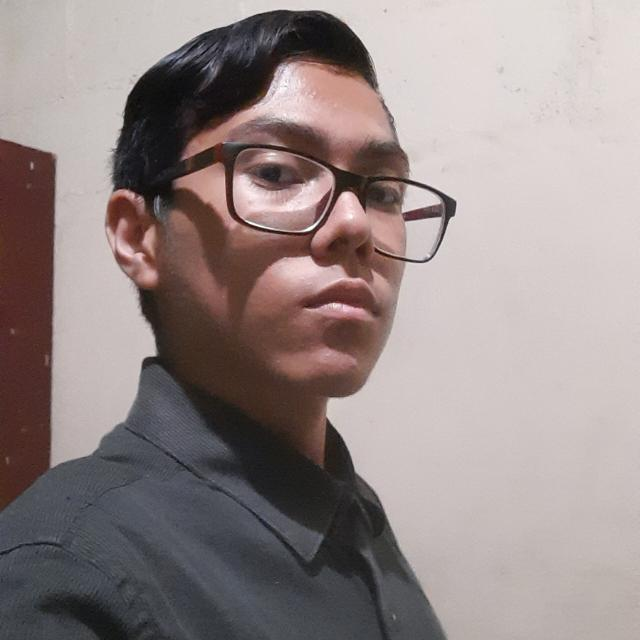
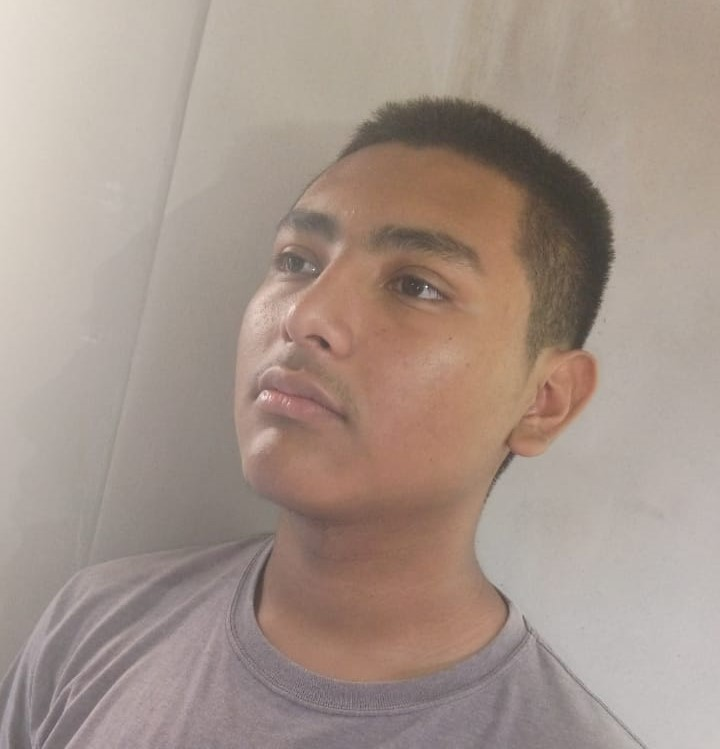
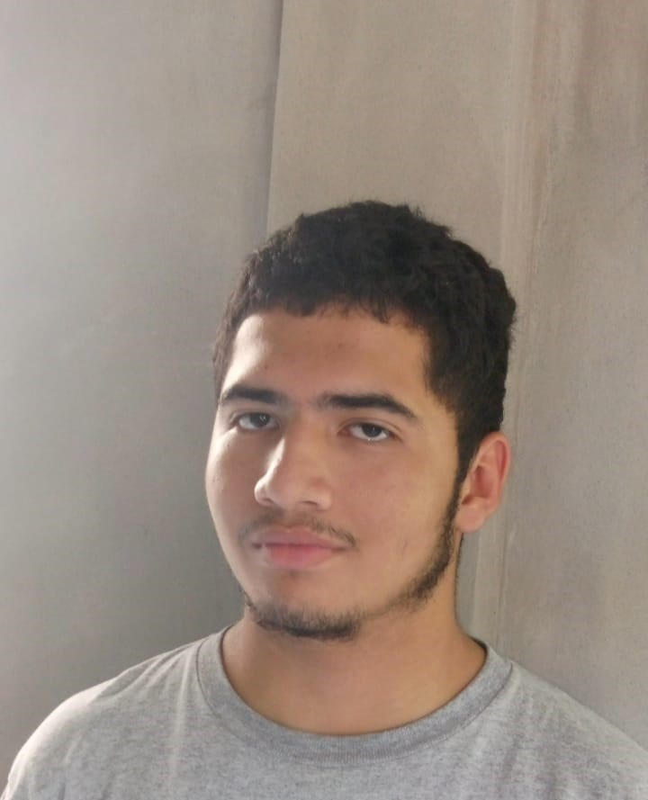
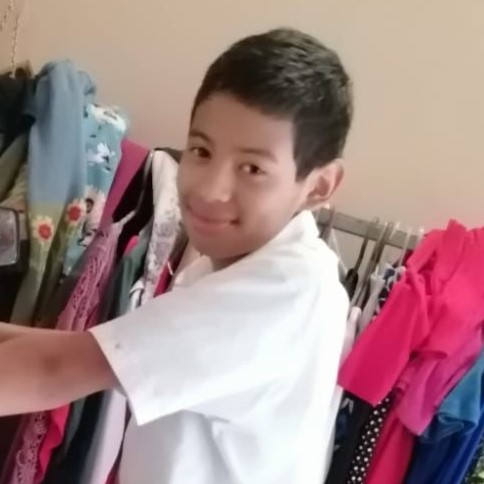
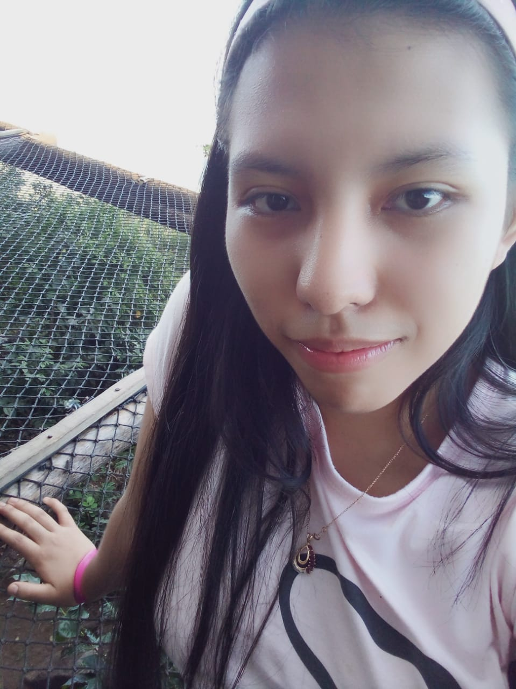
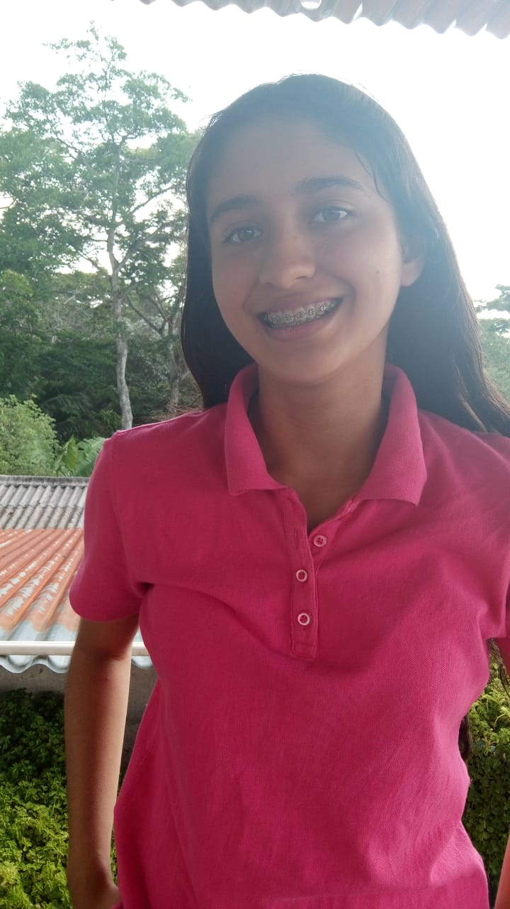
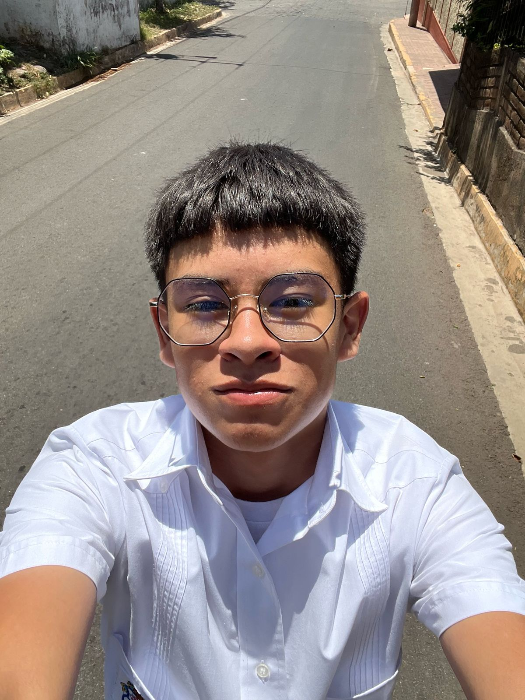

Estudiante: Marcos José Velásquez Solís
|  | Yo naci el 15 de mayo de 2009, desde muy pequeño e vivido en ciudad barrios en lo largo de mis 15 años e vivido muchas cosas en estos momentos me encuentro crusando el primer año de bachillerato tecnico en dasarrollo de sotfware, me gusta mucho la musica y las computadoras |
Estudiante: Gabriel Osmin Ulloa Rivera
|  | Mi nombre es Gabriel Rivera nací el 26 de junio de 2009 en San Miguel, el salvador. Desde pequeño tuve un gran interés por la música y las computadoras, lo que me llevó a estudiar software en el instituto nacional de Ciudad Barrios y participe en varios proyectos de música en Ciudad Barrios |
Estudiante: Oscar José Funes Funes
|  | Mi nombre es Oscar José Funes Funes, estudio en el Instituto Nacional de Ciudad Barrios, tengo 16 años, nací en el 24 de deciembre de 2008, me encuentro cursando el primer año de bachillerato, técnico desarrollador de software. |
Estudiante: Irvin D´alesandro Guzmán Pineda
|  | Mi nombre es Irwin D'aro Alexandro Alexandro Guzmán Pineda. Nací el 14 de junio de 2009, en San Miguel, El Salvador. Desde pequeño me gusta mucho la informática, la música y la mecánica. Actualmente estudio en el Instituto Nacional de Ciudad Barrios desarrollo de software |
Estudiante: Yaretsy Mabel Vásquez Vásquez
|  | Soy Yaretsy Mabel Vasquez Vasquez, estudiante de software de primer año, me apasiona dibujar y leer cómics. Actualmente estudio en el Instituto Nacional de Ciudad Barrios |
Estudiante: Tatiana Yamileth Guevara Saravia
|  | Soy Tatiana Yamileth Guevara Saravia, Estudiante de software de primer año,me apasiona leer. Actualmente estudio en el instituto nacional de ciudad barrios |
Estudiante: Anderson Josue Enriche Guevara
|  | Mi nombre es Anderson Josué Henríquez Guevara tengo 16 años de edad nací el 24 de febrero del 2009 en San Miguel Norte El Salvador, me gustan las motos, los carros y la mecánica, Estudio en el Instituto Nacional De Ciudad Barrios Primero Desarrollo De Software. |
Estudiantes del primer grado de bachillerato tecnico en desarrollo de sotfaware
En el Instituto Naciona de Ciudad Barrios